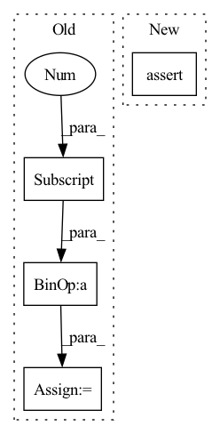

Pattern ID :1599
Before Change
// all random semi hard indices (or hardest easy if not enough semi hard)
neg_list_idx = all_semi_hard(ap_dist, an_dists, self.margin)
num_missing_negatives = NUM_NEGATIVES - neg_list_idx.shape[0]
if num_missing_negatives > 0:
hardest_easy_neg_idx = torch.topk(an_dists, NUM_NEGATIVES, largest=False)[1]
added_negs = hardest_easy_neg_idx[neg_list_idx.shape[0]:NUM_NEGATIVES]
neg_list_idx = torch.cat((neg_list_idx, added_negs), 0)After Change
an_sim = torch.exp((1 - an_dists_selected) / temperature)
else:
print("Euclidean dist not supported with infonce loss")
assert (0)
loss_info_nce = -torch.log(ap_sim / (torch.sum(an_sim) + ap_sim))
loss += loss_info_nceIn pattern: SUPERPATTERN
Frequency: 3
Non-data size: 4
Instances Fragment ID: 6501811
Project Name: rvl-lab-utoronto/video_similarity_search
Commit Name: c4c07e007bc05f55fa3860fd6215d029d71ff0bb
Time: 2021-02-19
Author: salar77h@gmail.com
File Name: loss/triplet_loss.py
M Class Name: OnlineTripleLoss
N Class Name: OnlineTripleLoss
M Method Name: forward(4)
N Method Name: forward(4)
M Parent Class: nn.Module
N Parent Class: nn.Module
M File Name: loss/triplet_loss.py
N File Name: loss/triplet_loss.py
M Start Line: 44
M End Line: 105
N Start Line: 44
N End Line: 118
Before Change
// Compute sigmas using schedule
sigmas = self.sigma_schedule(num_steps, device)
// Sample from first sigma distribution
x = sigmas[0] * x
// Compute gammas
gammas = torch.where(
(sigmas >= self.s_tmin) & (sigmas <= self.s_tmax),After Change
def forward(self, noise: Tensor, num_steps: Optional[int] = None) -> Tensor:
device = noise.device
num_steps = default(num_steps, self.num_steps) // type: ignore
assert exists(num_steps), "Parameter `num_steps` must be provided"
// Compute sigmas using schedule
sigmas = self.sigma_schedule(num_steps, device)
// Sample using sampler Fragment ID: 6501810
Project Name: archinetai/audio-diffusion-pytorch
Commit Name: df197bf615969bc32c1bf9963969c83b24251bcf
Time: 2022-08-10
Author: flavio.schneider.97@gmail.com
File Name: audio_diffusion_pytorch/diffusion.py
M Class Name: DiffusionSampler
N Class Name: DiffusionSampler
M Method Name: forward(3)
N Method Name: forward(3)
M Parent Class: nn.Module
N Parent Class: nn.Module
M File Name: audio_diffusion_pytorch/diffusion.py
N File Name: audio_diffusion_pytorch/diffusion.py
M Start Line: 190
M End Line: 207
N Start Line: 280
N End Line: 287
Before Change
last_output = torch.zeros((batch_size, self.d_output), device=device)
if timespans is None:
timespans = x.new_ones(x.shape[:-1]+(1,)) / x.shape[1]
for t in range(seq_len):
inputs = x[:, t]
ts = timespans[:, t].squeeze()After Change
//
L = u.size(-1)
if lengths is not None:
assert isinstance(lengths, torch.Tensor) and lengths.ndim == 1 and lengths.size(0) in [1, u.size(0)]
mask = torch.where(torch.arange(L, device=lengths.device) < lengths[:, None, None], 1., 0.)
u = u * mask
Fragment ID: 6501808
Project Name: raminmh/liquid-s4
Commit Name: 52f2ec0442e4b1472915480269dff07788ed7f97
Time: 2022-08-30
Author: mlech26l@gmail.com
File Name: src/models/sequence/mm.py
M Class Name: mmRNN
N Class Name: mmRNN
M Method Name: forward(5)
N Method Name: forward(3)
M Parent Class: nn.Module
N Parent Class: nn.Module
M File Name: src/models/sequence/mm.py
N File Name: src/models/sequence/mm.py
M Start Line: 83
M End Line: 108
N Start Line: 89
N End Line: 123